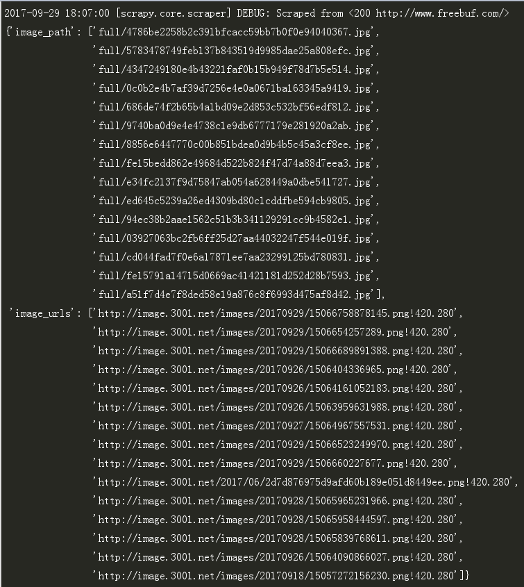

爬虫程序爬取的目标通常不仅仅是文字资源，经常也会爬取图片资源。这就涉及如何高效下载图片的问题。这里高效下载指的是既能把图片完整下载到本地又不会对网站服务器造成压力。也许你会这么做，在 pipeline 中自己实现下载图片逻辑。但 Scrapy 提供了图片管道ImagesPipeline，方便我们操作下载图片。
1.为什么要选用 ImagesPipeline ？
ImagesPipeline 具有以下特点：
- 将所有下载的图片转换成通用的格式（JPG）和模式（RGB）
- 避免重新下载最近已经下载过的图片
- 缩略图生成
- 检测图像的宽/高，确保它们满足最小限制
2.具体实现
2-1.定义字段
在 item.py 文件中定义我们两个字段image_urls 和images_path
1 | import scrapy |
2-2.编写 spider
我以爬取 freebuf 首页部分图片为例子讲解。具体代码如下：
1 | import scrapy |
2-3.实现 Pipeline
我新建一个名为PicsDownloadPipeline的类。需要注意一点的是： Scrapy 默认生成的类是继承Object， 要将该类修改为继承ImagesPipeline。然后实现get_media_requests和item_completed这两个函数。
get_media_requests(item, info)
ImagePipeline 根据 image_urls 中指定的 url 进行爬取，可以通过 get_media_requests 为每个 url 生成一个 Request。具体实现如下：
1 | def get_media_requests(self, item, info): |
item_completed(self, results, item, info)
当一个单独项目中的所有图片请求完成时，该方法会被调用。处理结果会以二元组的方式返回给 item_completed() 函数。这个二元组定义如下：(success, image_info_or_failure)
其中，第一个元素表示图片是否下载成功；第二个元素是一个字典，包含三个属性：
1) url - 图片下载的url。这是从 get_media_requests() 方法返回请求的url。
2) path - 图片存储的路径（类似 IMAGES_STORE）
3) checksum - 图片内容的 MD5 hash
具体实现如下：
1 | def item_completed(self, results, item, info): |
综合起来，PicsDownloadPipeline 的实现下载图片逻辑的代码如下：
1 | import scrapy |
2-4.配置设置
在 setting.py 配置存放图片的路径以及自定义下载的图片管道。
1 | # 设置存放图片的路径 |
2-5.运行程序
在 Scrapy 项目的根目录下，执行以下命令：
1 | scrapy crawl freebuf # freebuf 是我们在 spider 定义的 name 属性 |
如果你使用的 Python 版本是 3.x 的，可能会报出以下的错误。
1 | File "c:\program files (x86)\python36-32\lib\site-packages\scrapy\pipelines\images.py", line 15, in <module> |
这是因为 Scrapy 框架用到这个Python Imaging Library (PIL)图片加载库，但是这个库只支持 2.x 版本，所以会运行出错。对于使用 Python 3.x 版本的我们，难道就束手无策？Scrapy 的开发者建议我们使用更好的图片加载库Pillow。为什么说更好呢？一方面是兼容了 PIL，另一方面在该库支持生成缩略图。
因此，我们安装 Pillow 就能解决运行报错的问题。具体安装 Pillow命令如下：
1 | pip install pillow |
安装之后，重新运行爬虫程序。Scrapy 会运行结果中显示我们定义的image_urls 和images_path字段。

2-6.运行结果
我们会发现在 D 盘有个名为freebuf的文件夹。在该文件夹中有个full文件夹，里面存放我们刚才爬取到的图片。

如果有在 setting.py 文件中设置生成缩略图。
1 | IMAGES_THUMBS = { |
那么到时候，与full同级的目录下会多出个thumbs文件夹。里面会有两个文件夹small和big，分别对应小分辨率的图片和大分辨率的图片。
3.优化
3-1.避免重复下载
在 setting.py 中新增以下配置可以避免下载最近已经下载的图片。
1 | # 90天的图片失效期限 |
设置该字段，对于已经完成爬取的网站，重新运行爬虫程序。爬虫程序不会重新下载新的图片资源。
3-2.自动限速（AutoTrottle）
下载图片是比较消耗服务器的资源以及流量。如果图片资源比较大，爬虫程序一直在下载图片。这会对目标网站造成一定的影响。同时，爬虫有可能遭到封杀的情况。
因此，我们有必要对爬虫程序做爬取限速处理。Scrapy 已经为我们提供了AutoTrottle功能。
只要在 setting.py 中开启AutoTrottle功能并配置限速算法即可。我采用默认的配置，具体配置如下：
1 | # 启用AutoThrottle扩展 |
值得注意的是，启用AutoThrottle扩展时，仍然受到DOWNLOAD_DELAY（下载延迟）和CONCURRENT_REQUESTS_PER_DOMAIN（对单个网站进行并发请求的最大值）以及CONCURRENT_REQUESTS_PER_IP（对单个IP进行并发请求的最大值）的约束。
4.源码
如果你想获取项目的源码


 —— 高效下载图片 - 极客猴&pics=https://s1.ax1x.com/2020/05/15/YsbeXj.jpg&summary=爬虫程序爬取的目标通常不仅仅是文字资源，经常也会爬取图片资源。这就涉及如何高效下载图片的问题。这里高效下载指的是既能把图片完整下载到本地又不会对网站服务器造成压力。也许你会这么做，在 pipeline 中自己实现下载图片逻辑。但 Scrapy 提供了图片管道ImagesPipeline，方便我们操作下载图片。)
 —— 高效下载图片 - 极客猴&pics=https://s1.ax1x.com/2020/05/15/YsbeXj.jpg&summary=爬虫程序爬取的目标通常不仅仅是文字资源，经常也会爬取图片资源。这就涉及如何高效下载图片的问题。这里高效下载指的是既能把图片完整下载到本地又不会对网站服务器造成压力。也许你会这么做，在 pipeline 中自己实现下载图片逻辑。但 Scrapy 提供了图片管道ImagesPipeline，方便我们操作下载图片。)
 —— 高效下载图片 - 极客猴&pics=https://s1.ax1x.com/2020/05/15/YsbeXj.jpg&summary=爬虫程序爬取的目标通常不仅仅是文字资源，经常也会爬取图片资源。这就涉及如何高效下载图片的问题。这里高效下载指的是既能把图片完整下载到本地又不会对网站服务器造成压力。也许你会这么做，在 pipeline 中自己实现下载图片逻辑。但 Scrapy 提供了图片管道ImagesPipeline，方便我们操作下载图片。)